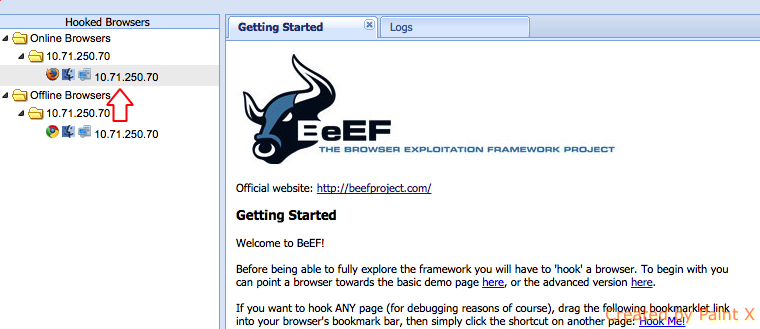
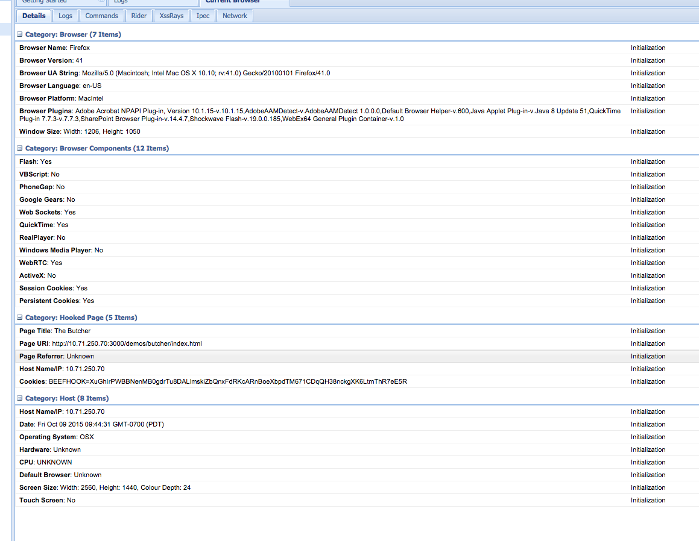
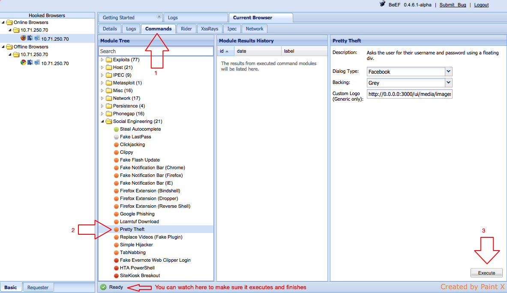
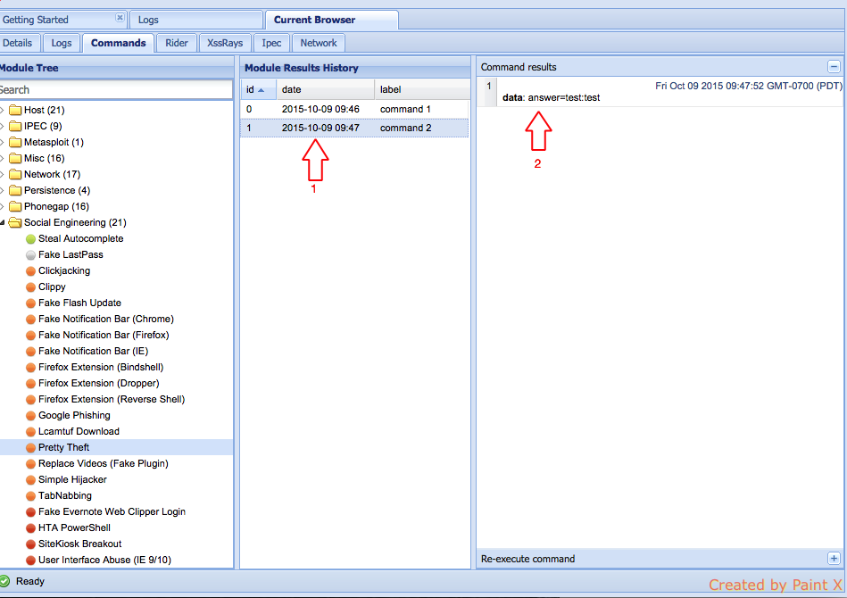

Introduction
BeEF is short for The Browser Exploitation Framework. For our purpose BeEF is a good tool to prove the value of fixing XSS vulnerabilities, yes we could show the PM look I can make the page alert(1), but they'll understand the risk if you can instead change the page to a Google Login window. It is a penetration testing tool that focuses on the web browser. Unlike other security frameworks, BeEF looks past the hardened network perimeter and client system, and examines exploitability within the context of the one open door: the web browser. BeEF will hook one or more web browsers and use them as beachheads for launching directed command modules and further attacks against the system from within the browser context.
Installation
- Install Ruby 1.9, homebrew & xCode if not already installed
- Install Bundler, in terminal:sudo gem install bundler
- CD into whatever folder you keep tools and clone BeEFgit clone https://github.com/beefproject/beef.git
- CD into BeEF folder
- Run the BeEF install commandbundle install
- The install mentions it but be sure to add ImageMagick if it is not already installedbrew update && brew upgrade && brew install imagemagick
Instructions
BeEF's actually very simple you start it by cd'ing into the beef folder and turn it on with 1 command
- cd beef/
- ./beef -x
Now it will print out a bunch of data, there's various ways you can use beef, we'll be focusing on the GUI but if you were running on the command line you might want to pay attention to other data like the API Key. But for the GUI, you're looking for the Hook URL and the UI URL, it prints out four of these, from what I can tell the one you can from the network access always prints out second (The IP address should match your computers IP address in OSX > Preferences > Network settings). From here in for example Chrome, go to the UI URL
- http://##.##.##.##:####/ui/panel
- Username:beef, Password:beef
This drops you into the getting started tab, in the description you can find the 2 demo sites ( http://##.##.##.##:####/demos/butcher/index.html & http://##.##.##.##:####/demos/basic.html) and the an explanation of the color coding for each command. So to test lets go to one of the demo sites in firefox, it already has the hook script in it. This should make a Firefox browser appear in BeEF UI, Online browsers menu on the left of the UI.
Enter the details view by clicking on the IP address of the hooked browser. This should open the Current Browser tab, it starts on the details sub tab that lists a bunch of information it automatically pulls back from the browser.
Now check out the Commands sub-tab, here are all the exploits you can run against a hooked browser. I find Petty Theft and Google Phishing are probably the easiest way to demo how bad XSS is.
Select a command from the Module Tree and hit the Execute button in the bottom right of the module column. For simpler commands like Debug > Return ascii characters, you simply hit select the command number in Module Results History and the information should come back 1-10 seconds later depending on connection speed. For Social Engineering commands you will not get a result until they submit the form (which would deliver back email and password, you probably shouldn't let them fill it out with legitimate info) and you get nothing back if they cancel out. There's other fun commands like playing sounds on Mobile Device or you can make your own custom sound to play on a computer, you can even Rick Roll people.
So that's the basics, now if you have a reflected or stored vulnerability, you just drop in your BeEF hook (Hook URL mentioned in printed out when you launched) in as a script. I suggest just using tinyURL to obfuscate it if the vulnerability is in the URL. Just use the hook URL:
There's ways you can hook the browser itself if they install extensions, for now the easiest way to keep somebody hooked in is to use the Persistence Modules in the Module Tree. There's also a way you can setup a listener to automatically launch attacks when people get hooked by BeEF.